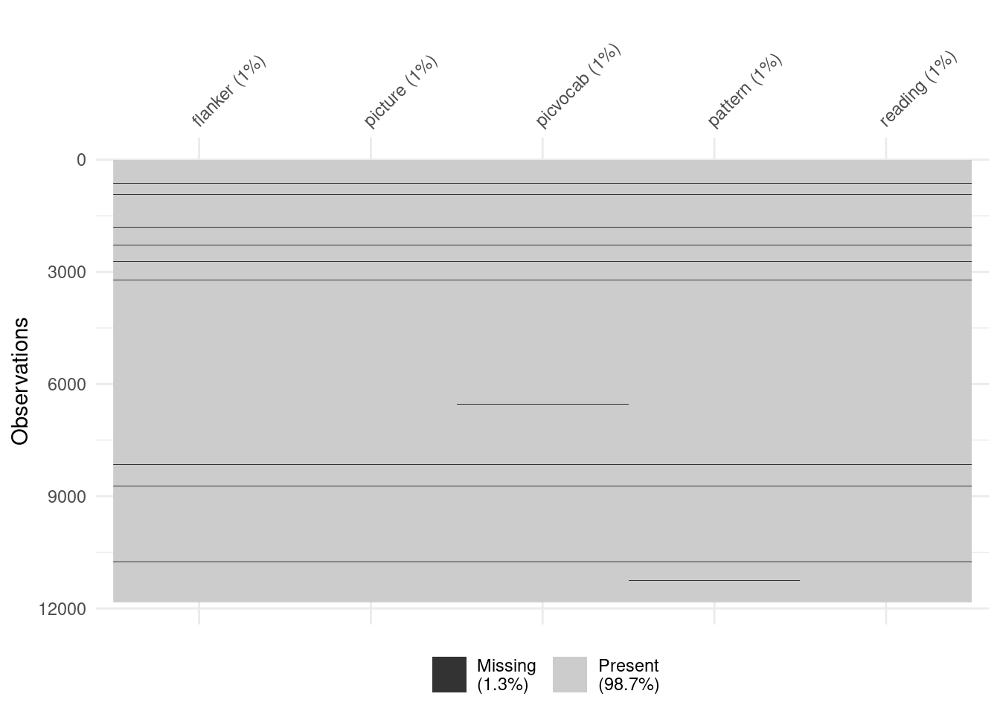
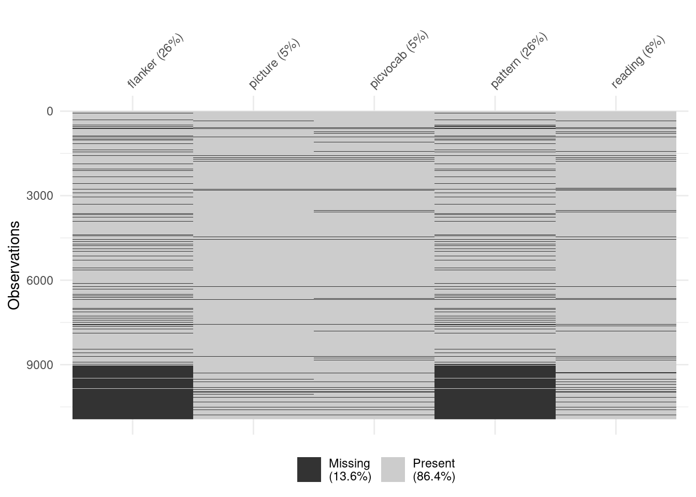
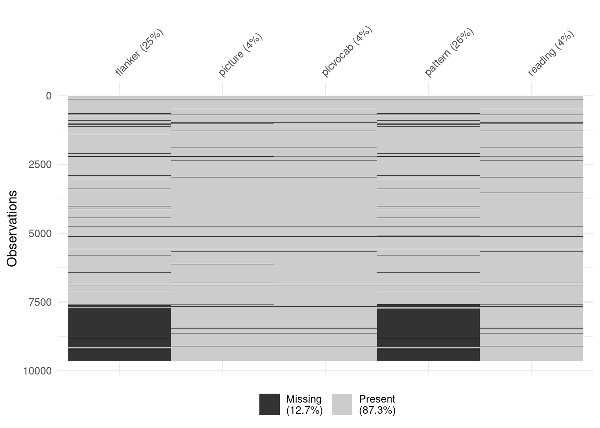
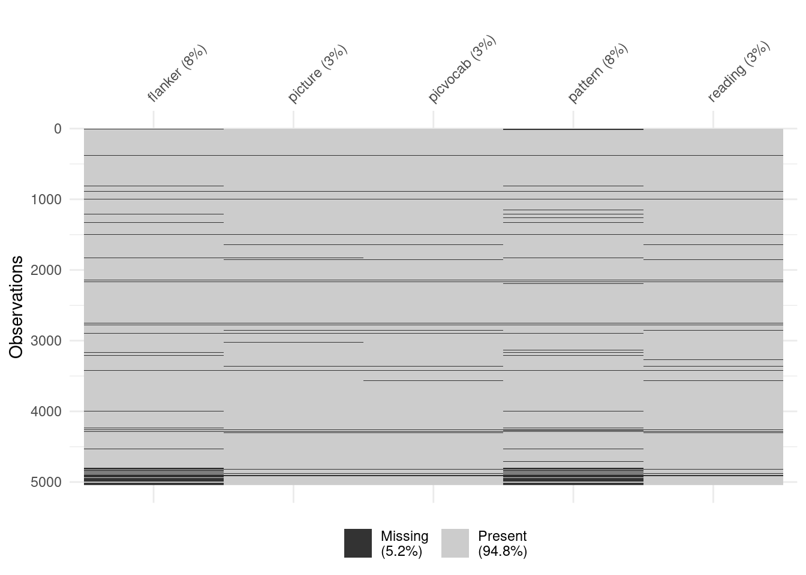

demo6 <- tibble::as_tibble(rio::import("ab_p_demo.tsv")) # Demographic Data
svs6 <- tibble::as_tibble(rio::import("nc_y_svs.tsv")) # Snellen's vision problem screening
cbcl6 <- tibble::as_tibble(rio::import("mh_p_cbcl.tsv")) # Child Behavior Checklist
tool6 <- tibble::as_tibble(rio::import("nc_y_nihtb.tsv")) # NIH Toolbox
asr6 <- tibble::as_tibble(rio::import("mh_p_asr.tsv")) # Adult Self ReportLGCM_ABCD_6.0
Setup
Load Data
replace “n/a” with NA
demo6 <- demo6 %>%
dplyr::mutate(dplyr::across(dplyr::everything(), ~ dplyr::na_if(as.character(.x), "n/a")))
svs6 <- svs6 %>%
dplyr::mutate(dplyr::across(dplyr::everything(), ~ dplyr::na_if(as.character(.x), "n/a")))
cbcl6 <- cbcl6 %>%
dplyr::mutate(dplyr::across(dplyr::everything(), ~ dplyr::na_if(as.character(.x), "n/a")))
tool6 <- tool6 %>%
dplyr::mutate(dplyr::across(dplyr::everything(), ~ dplyr::na_if(as.character(.x), "n/a")))
asr6 <- asr6 %>%
dplyr::mutate(dplyr::across(dplyr::everything(), ~ dplyr::na_if(as.character(.x), "n/a")))Vision problem screening
# Check for vision problem
vision <- svs6 %>% mutate(visionProb = ifelse(nc_y_svs_002 == 0 | nc_y_svs_002 == 1 | nc_y_svs_002__01 == 2, 1, 0))
# Join data excluding participants with vision problem
abcd6_all <- plyr::join_all(list(vision, demo6, cbcl6, tool6, asr6), by = c("participant_id", "session_id"), type = "full") %>%
filter(visionProb != 1 | is.na(visionProb))prapare Data
# check duplicate
abcd6_all %>%
select(participant_id, session_id) %>%
group_by(session_id) %>%
dplyr::summarise(count = dplyr::n(), duplicate = any(duplicated(participant_id)))# A tibble: 7 × 3
session_id count duplicate
<chr> <int> <lgl>
1 ses-00A 11837 FALSE
2 ses-01A 11211 FALSE
3 ses-02A 10938 FALSE
4 ses-03A 10226 FALSE
5 ses-04A 9647 FALSE
6 ses-05A 8688 FALSE
7 ses-06A 5042 FALSE # Convert data into appropriate type
abcd6_all <- abcd6_all %>%
dplyr::mutate(dplyr::across(dplyr::everything(), ~ utils::type.convert(.x, as.is = TRUE)))
# label session_id into 0 (baseline) to 6 years follow-up
abcd6_all <- abcd6_all %>%
mutate(
session_id = factor(session_id,
levels = c(
"ses-00A",
"ses-01A",
"ses-02A",
"ses-03A",
"ses-04A",
"ses-05A",
"ses-06A"
),
labels = c("0", "1", "2", "3", "4", "5", "6")
)
)Age in each timepoint
abcd6_all %>%
select(participant_id,session_id,ab_p_demo_age) %>%
group_by(session_id) %>%
dplyr::summarise(count = dplyr::n(),
AgeMean = round(mean(ab_p_demo_age, na.rm = T), 2),
AgeSD = round(sd(ab_p_demo_age, na.rm = T), 2),
)# A tibble: 7 × 4
session_id count AgeMean AgeSD
<fct> <int> <dbl> <dbl>
1 0 11837 9.96 0.62
2 1 11211 11.0 0.64
3 2 10938 12.1 0.67
4 3 10226 13.0 0.65
5 4 9647 14.2 0.71
6 5 8688 15.1 0.67
7 6 5042 16.1 0.66Load Cognition Data (g factor)
g_factor <- abcd6_all %>%
select(contains(c("_id", "uncor_score")))
g_factor %>% colnames() [1] "participant_id"
[2] "session_id"
[3] "nc_y_nihtb__comp__cryst__uncor_score"
[4] "nc_y_nihtb__comp__fluid__uncor_score"
[5] "nc_y_nihtb__comp__tot__uncor_score"
[6] "nc_y_nihtb__crdst__uncor_score"
[7] "nc_y_nihtb__flnkr__uncor_score"
[8] "nc_y_nihtb__lswmt__uncor_score"
[9] "nc_y_nihtb__picsq__uncor_score"
[10] "nc_y_nihtb__picvcb__uncor_score"
[11] "nc_y_nihtb__pttcp__uncor_score"
[12] "nc_y_nihtb__readr__uncor_score" colnames(g_factor) <- c(
"participant_id",
"session_id",
"cryst", # Crystallized Composite Score
"fluid", # Fluid Composite Score
"total_int", # Total Composite Scores
"cardsort", # Dimensional Change Card Sort
"flanker", # Flanker Inhibitory Control & Attention
"list", # List Sorting Working Memory
"picture", # Picture Sequence Memory
"picvocab", # Picture Vocabulary
"pattern", # Pattern Comparison Processing Speed
"reading" # Oral Reading Recognition: Language
)Valid data N & % in Eventname
g_factor %>%
pivot_longer(where(is.numeric), names_to = "variable", values_to = "value") %>%
group_by(session_id, variable) %>%
dplyr::summarise(N = sum(!is.na(value)), Pct = round(mean(!is.na(value)) * 100, 2), .groups = "drop") %>%
pivot_wider(
names_from = session_id,
values_from = c(N, Pct),
names_glue = "{.value}_{session_id}"
) %>%
relocate(variable, {
sessions <- str_remove(names(.)[-1], "^(N|Pct)_") %>% unique()
as.vector(rbind(
paste0("N_", sessions),
paste0("Pct_", sessions)
))
})# A tibble: 10 × 15
variable N_0 Pct_0 N_1 Pct_1 N_2 Pct_2 N_3 Pct_3 N_4 Pct_4 N_5
<chr> <int> <dbl> <int> <dbl> <int> <dbl> <int> <dbl> <int> <dbl> <int>
1 cardsort 11685 98.7 0 0 6 0.05 0 0 37 0.38 0
2 cryst 11658 98.5 0 0 7420 67.8 0 0 3371 34.9 0
3 flanker 11684 98.7 0 0 8139 74.4 0 0 7200 74.6 0
4 fluid 11602 98.0 0 0 10 0.09 0 0 5 0.05 0
5 list 11641 98.3 0 0 15 0.14 0 0 9235 95.7 0
6 pattern 11666 98.6 0 0 8102 74.1 0 0 7180 74.4 0
7 picture 11678 98.7 0 0 10368 94.8 0 0 9226 95.6 0
8 picvocab 11690 98.8 0 0 10340 94.5 0 0 9280 96.2 0
9 reading 11676 98.6 0 0 10297 94.1 0 0 9227 95.6 0
10 total_int 11598 98.0 0 0 10 0.09 0 0 5 0.05 0
# ℹ 3 more variables: Pct_5 <dbl>, N_6 <int>, Pct_6 <dbl># 5 cognitive tasks:
# flnkr, picsq, picvcb, pttcp, readr
# 4 time points available:
# Baseline (00), 2 year follow-up (02), 4 year follow-up (04), 6 year follow-up (06)Visualization
# Baseline
g_factor %>%
filter(session_id == "0") %>%
select(
"flanker", # Flanker Inhibitory Control & Attention
"picture", # Picture Sequence Memory
"picvocab", # Picture Vocabulary
"pattern", # Pattern Comparison Processing Speed
"reading" # Oral Reading Recognition: Language
) %>%
visdat::vis_miss()
# 2-year follow-up
g_factor %>%
filter(session_id == "2") %>%
select(
"flanker", # Flanker Inhibitory Control & Attention
"picture", # Picture Sequence Memory
"picvocab", # Picture Vocabulary
"pattern", # Pattern Comparison Processing Speed
"reading" # Oral Reading Recognition: Language
) %>%
visdat::vis_miss()
# 4-year follow-up
g_factor %>%
filter(session_id == "4") %>%
select(
"flanker", # Flanker Inhibitory Control & Attention
"picture", # Picture Sequence Memory
"picvocab", # Picture Vocabulary
"pattern", # Pattern Comparison Processing Speed
"reading" # Oral Reading Recognition: Language
) %>%
visdat::vis_miss()
# 6-year follow-up
g_factor %>%
filter(session_id == "6") %>%
select(
"flanker", # Flanker Inhibitory Control & Attention
"picture", # Picture Sequence Memory
"picvocab", # Picture Vocabulary
"pattern", # Pattern Comparison Processing Speed
"reading" # Oral Reading Recognition: Language
) %>%
visdat::vis_miss()